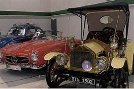

COIMBATORE
About:
Coimbatore, located in Tamil Nadu, is a major industrial and educational hub, often called the "Manchester of South India" due to its thriving textile and manufacturing industries. It has a pleasant climate, thanks to its location near the Western Ghats. The city is known for its blend of traditional Tamil culture and modern urban life, with prominent temples, educational institutions, and growing IT and healthcare sectors. Popular nearby attractions include Ooty, Perur Temple, and the Anamalai Tiger Reserve.
Famous place
1.Isha Yoga Center
The Isha Yoga Center, located near the foothills of the Velliangiri Mountains in Coimbatore, Tamil Nadu, is a renowned spiritual and wellness center founded by Sadhguru Jaggi Vasudev. The center is known for offering various yoga and meditation programs, including the flagship Inner Engineering program.

2.Marudamalai Temple
The Marudamalai Temple is a famous Hindu temple located on a hill about 12 kilometers from Coimbatore, Tamil Nadu. It is dedicated to Lord Murugan, the Tamil god of war and victory. The temple, set atop the scenic Marudamalai Hills, is known for its spiritual significance and natural beauty

3.VOC Park and Zoo
The VOC Park and Zoo, located in the heart of Coimbatore, is a popular recreational space for families and children. Named after freedom fighter V. O. Chidambaram Pillai, the park offers a blend of entertainment and education.
4.Gedee Car Museum
The Gedee Car Museum, located in Coimbatore, is a unique museum dedicated to showcasing vintage and classic cars from around the world. Founded by industrialist G.D. Naidu, the museum reflects his passion for automobiles and engineering.
5.Siruvani Waterfalls and Dam
The Siruvani Waterfalls and Dam, located about 35 kilometers from Coimbatore, is a popular tourist spot known for its scenic beauty and pristine environment. The Siruvani River originates in the Western Ghats and provides water to the Coimbatore region